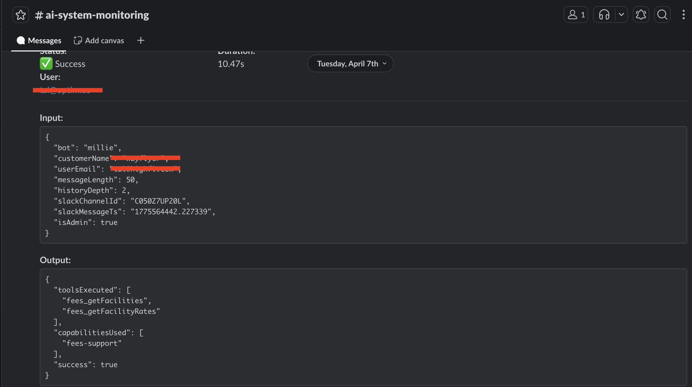
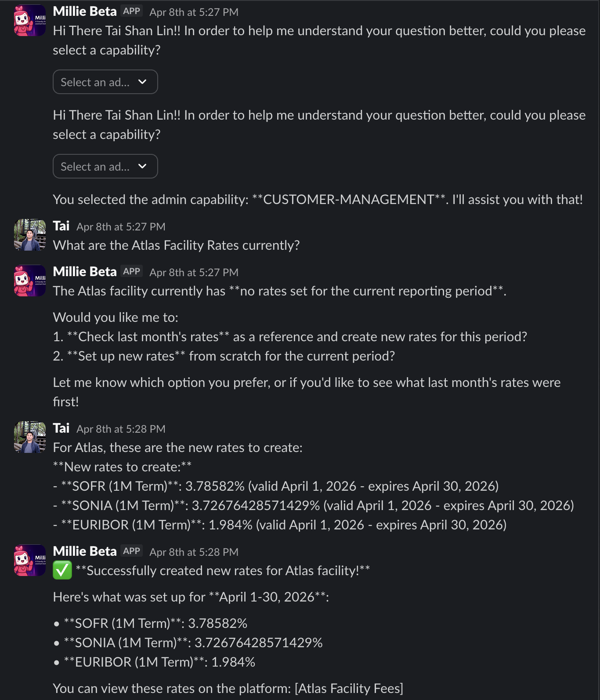
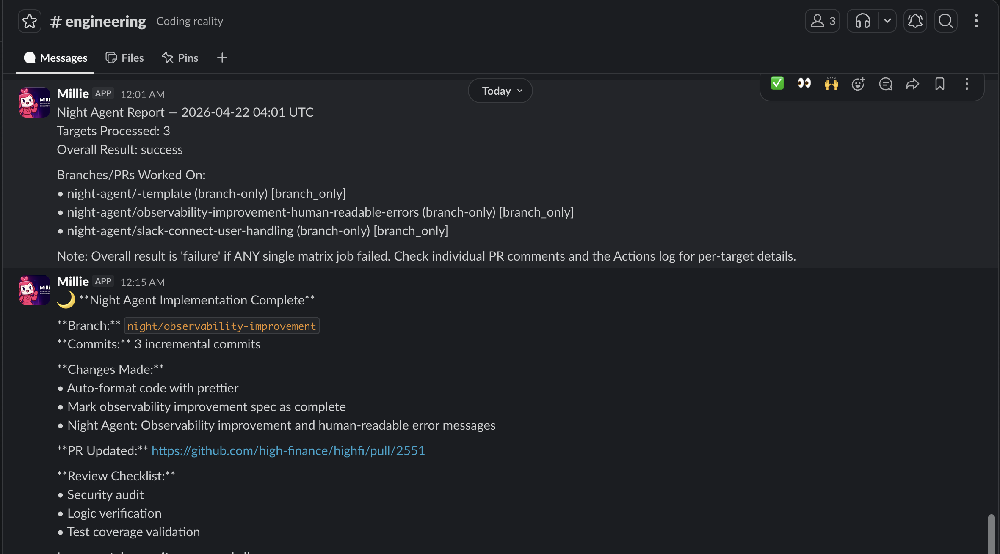

The work I do sits at an uncomfortable intersection. Language models are probabilistic — they generate, approximate, and occasionally hallucinate. Financial systems are deterministic — they settle, audit, and carry real legal and financial consequences. My job is to build the infrastructure layer between them: the harnesses, guardrails, and engines that let autonomous agents operate in contexts where failure is not a performance problem, it's a compliance problem.
I didn't arrive here through a conventional path. Three years at BMO as a business analyst in capital markets and commercial banking gave me something most engineers don't carry: I read the legal agreements. I defined the requirements for credit systems. I understood how financial infrastructure actually works before I ever wrote a line of production code. That domain depth is not incidental to the work — it's the foundation that makes the technical decisions trustworthy.
Then I taught myself to code. Joined Utradea as one of its first engineers, shipped paid production features within months, led a 50+ API migration post-merger, built the company's first OpenAI integration. By the time I joined HighFi as a founding engineer in 2023, the path from capital markets operations to autonomous agent infrastructure felt less like a career pivot and more like an inevitable convergence.
"The question isn't whether the model is capable. It's whether your infrastructure is ready for what the model might do."
At HighFi, I design and build the systems that make autonomous operation safe: a typed agent harness with structured step tracing and full audit trails, a role-based capability registry that gates LLM tool access by customer and user role, a config-driven calculation engine that replaces per-customer engineering sprints, and a nightly CI pipeline that autonomously implements specs behind a zero-trust security layer. Each of these is an infrastructure problem as much as an AI problem.
This portfolio is not a digitized resume. It is the story behind the bullet points — the architectural decisions, the tradeoffs that had consequences, the design choices that only make sense in context. It is written for engineers and founders doing due diligence, and for potential clients evaluating whether the domain credibility is real. The six chapters that follow each follow the same structure: what was broken or missing, what I built, and what changed.
A resume is a compression artifact. It reduces months of hard architectural decisions to a single bullet point. That feels like a disservice to the work! This is why i built this portfolio to unpack those decisions, to give them the context they deserve, and to make the story behind the bullet points accessible to engineers and founders doing due diligence, and to potential clients evaluating whether the domain credibility is real.
HighFi sells infrastructure. The product thesis is that capital markets operations — the compliance, servicing, and reporting layer that sits between a legal agreement and a funded transaction — is an engineering problem that most financial companies are solving expensively in-house, one spreadsheet and one bespoke system at a time. HighFi's answer is a purpose-built operating system for that layer.
Every lending relationship begins with a legal agreement. In asset-backed lending, these agreements define eligibility rules, concentration limits, and performance metrics that govern the health of the borrower's portfolio. They are compliance red lines negotiated between counterparties — and no two are identical. A receivables-based facility for one customer has different advance rates, different concentration thresholds, and different reporting cadences than the next. This is what makes the domain hard to model at scale: the rules are bespoke, they change when terms are renegotiated, and they carry real legal and financial consequences when violated.
The HighFi OS is organized around the lifecycle of a financial facility: a lending relationship defined by a legal agreement, governed by negotiated rules, and settled through recurring funding transactions.
The Originator System manages the onboarding and ongoing configuration of each customer. Every originator brings their own business logic, their own facility types, their own integration requirements. The Originator System is where that customer-specific configuration lives — the entry point through which everything downstream becomes customizable without code changes.
The Facility Management System handles the complete lifecycle of a financial facility from setup to ongoing operations. Facilities come in several structural forms — warehouse lines, SPVs, securitization vehicles — each with different calculation schemas, different reporting requirements, and different external system integrations. The Facility Management System abstracts those differences behind a unified configuration interface.
The Assignment Engine manages the allocation of receivables to facilities based on the rules defined in each customer's legal agreement. Which assets are eligible? In what priority order are they assigned? What happens when concentration limits are reached? The Assignment Engine answers these questions deterministically for every calculation run, and maintains a complete audit trail of every assignment decision.
The Calculation Engine is the computational core of the platform. It takes a facility, a loan tape, and a configuration and produces a facility snapshot — a point-in-time record of the facility's financial state, including receivables-level calculations, eligibility evaluations, concentration checks, and borrowing base metrics. Every funding operation on the platform flows through it.
The Snapshot System locks in calculation results and converts them into funded transactions. Once a snapshot is produced, the Snapshot System manages submission — committing assignments, creating draw and recycle records, calculating business-day-adjusted funding dates, and triggering the reporting pipeline. It is the operational boundary between a calculation and a transaction with a counterparty on the other end.
The Reporting Pipeline generates and distributes the outputs that counterparties and regulators require: Excel borrowing base certificates, PDF funding requests, scheduled compliance reports. Report generation is event-driven — submissions, funding request creation, and snapshot events each trigger their own report jobs, configured per facility.
Six components is not, on its own, an interesting architecture. What makes the system extensible is the FacilityConfig registry — the layer that makes all six components customer-specific without touching the codebase.
Every facility on the platform is backed by a
FacilityConfig object: a typed, validated
configuration that declares the business logic, calculation
schemas, feature flags, assignment strategies, and report jobs
for that specific facility. The registry maps customers to their
facilities and their configs:
export const facilityConfigs: FacilityConfigRegistry = {
cherry: {
barclays: getBarclaysFacilityConfig,
citibank: getCitibankFacilityConfig,
},
wayflyer: {
atlas: getAtlasFacilityConfig,
fortress: getFortressFacilityConfig,
},
}
At runtime, every component in the OS loads its config from this
registry via getFacilityConfig(). The Calculation
Engine reads which features are enabled and which calculation
schemas apply. The Assignment Engine reads which assignment
strategy to execute. The Snapshot System reads which report jobs
to trigger and whether auto-submit is enabled. No component
hardcodes customer-specific behavior — it reads it.
The consequence is that onboarding a new customer is a configuration task, not an engineering sprint. A new originator with a new facility type requires a new config object and the business logic that populates it — not changes to any of the six core components. Equally, when a customer renegotiates their legal agreement and their eligibility rules change, that change ships as a config update, not a deployment.
This is the architectural property that makes the OS worth building. The six components are generic infrastructure. The FacilityConfig registry is what makes them a capital markets operating system for a specific customer with specific legal obligations.
In a regulated financial context, an agent that fails silently is not a bug — it's a compliance risk. Before the harness existed, each new agent at HighFi required rebuilding the same scaffolding from scratch: logging setup, error collection, step tracking, Slack notifications. No two agents had consistent observability. There was no shared audit trail. When something went wrong, reconstructing what the agent had done required reading logs by hand. The harness was built to solve this once, at the infrastructure level, so no individual agent ever has to solve it again.
The architecture has four layers: an execution contract that every agent inherits, a step tracing system that makes every action observable, a capability registry that controls what each agent is allowed to do based on who is asking, and a stateful extension that enforces phase ordering, carries episodic context, and enables session resumption across multi-step regulated workflows.
Every agent extends
BaseAgent<TDeps, TInput, TOutput>. The three
generics are the entire contract: what context the agent needs,
what it accepts, what it returns. Typed dependency injection
means agents declare their requirements explicitly — no hidden
globals, no ambient context. The execute method is
the only thing a subclass must implement. Everything else —
tracing, error collection, Slack observability — is inherited.
abstract class BaseAgent<TDeps, TInput, TOutput> { abstract readonly agentId: string constructor(deps: TDeps) // Inherited — every subclass gets these for free protected startStep(stepName: string, input: unknown): StepTrace protected finishStep(trace: StepTrace, output: unknown): StepTrace protected failStep(trace: StepTrace, error: unknown): StepTrace protected createOnStepFinish(stepPrefix: string): OnStepFinishCallback withSlackNotifications(handler: SlackStepTraceHandler, user?: string): this // Must be implemented by each subclass abstract execute(input: TInput): Promise<AgentHandoff<TOutput>> }
In practice, a new agent is a short file. The
SentinelAgent below — which monitors DeFi portfolio
health — exists as a complete, production-ready agent in about
20 lines:
class SentinelAgent extends BaseAgent<SentinelDeps, SentinelInput, SentinelOutput> { readonly agentId = 'sentinel-agent' async execute(input: SentinelInput): Promise<AgentHandoff<SentinelOutput>> { const step = this.startStep('analyzePortfolio', { portfolioId: input.portfolioId }) try { const result = await someAnalysis(this.deps.morpho, this.deps.prisma, input) this.finishStep(step, result) return this.succeed({ riskLevel: result.riskLevel }) } catch (error) { this.failStep(step, error) return this.fail({ riskLevel: 'HIGH' }, [error as Error]) } } }
Every call to startStep creates a
StepTrace — a timestamped record of what the agent
was doing, what it received as input, and what it produced as
output. When finishStep or failStep is
called, the duration is computed and the trace is pushed to an
accumulated list. At the end of execution, every step the agent
took is captured in the AgentHandoff it returns.
The audit trail is a side effect of running the agent, not a
separate instrumentation task.
interface StepTrace { id: string // randomUUID() agentId: string // which agent produced this step stepName: string // e.g. 'analyzePortfolio', 'llm-reasoning:step' input: unknown // what was passed in output: unknown // what was produced timestamp: Date durationMs: number status: 'pending' | 'complete' | 'error' metadata?: Record<string, unknown> }
createOnStepFinish wires this tracing directly into
the Vercel AI SDK's onStepFinish callback, so every
LLM reasoning step — including tool call sequences — is captured
automatically. No manual instrumentation required at the model
layer.

#ai-system-monitoring —
SlackStepTraceHandler in production. Status,
duration, structured input and output recorded per run.
The SlackStepTraceHandler is not agent-specific.
Any agent that calls withSlackNotifications()
routes its step traces to a designated Slack channel. The
Night Agent CI/CD pipeline — covered in Chapter V — adopted
this same mechanism to post nightly run summaries to
#engineering. The same infrastructure that
surfaces a compliance-sensitive funding request execution also
reports overnight code generation results. One investment, two
use cases.
The registry answers one question at request time: given this customer and this user, which tools is the agent allowed to call? The decision is not purely role-based — it is state-based. A customer must have active facilities in the database before customer-facing capabilities are unlocked. Admin capabilities are gated separately. The model's authorized toolset and system prompt are both constructed from this evaluation — the model only receives guidance for tools it is permitted to use.
async function getAvailableCapabilities(ctx, { customer, isAdmin }) { const facilityCount = await ctx.prisma.facility.count({ where: { customerId: customer.id } }) if (facilityCount > 0) { // Customer-facing tools require at least one active facility push(FUNDING_REQUEST_SUPPORT, FEES_SUPPORT, FACILITY_REPORTING) } if (isAdmin) { // DeFi and Morpho tools are admin-only, regardless of facility state push(DEFI_OPERATIONS, MORPHO_MARKET_ANALYSIS) } }
| Capability | Access condition |
|---|---|
| funding-request-support | Customer Active facilities in database |
| fees-support | Customer Active facilities in database |
| facility-reporting | Customer Active facilities in database |
| defi-operations | Admin only |
| morpho-market-analysis | Admin only |
Each capability ships with a ToolManifest — a
structured object containing promptGuidance,
workflows, examples, and
constraints. When an authorized toolset is
assembled, the manifests for each capability are injected into
the system prompt. The model receives workflow instructions
only for what it's allowed to do. This is what makes the
dynamic system prompt possible — it's not a static string,
it's a capability manifest rendered at runtime.
A stateless agent executes and forgets. That is sufficient for single-step tasks, but a multi-step regulated deal flow — one that spans sessions, enforces phase ordering, and must produce an audit trail per phase — requires something the original three-layer harness did not provide: the agent must know where it is in a workflow, where it is allowed to go next, and what it has already learned. Without that, resumption after an interruption means replaying from scratch, phase enforcement means duplicating logic in every subclass, and context enrichment requires out-of-band storage that falls outside the audit trail.
abstract class BaseAgent< TDeps, TInput, TOutput, TContext extends object = Record<string, unknown>, TState extends string = string, > { // Episodic context — accumulated over the workflow session protected context: TContext protected currentState: TState abstract readonly initialState: TState // Optional FSM enforcement — declare to constrain transitions protected validTransitions?: Partial<Record<TState, TState[]>> protected onEnterState?(state: TState, prev: TState): void protected onExitState?(state: TState, next: TState): void // Transitions to next state; throws on illegal moves protected transition(next: TState): void protected updateContext(patch: Partial<TContext>): void // Accepts optional incoming context for session resumption abstract execute(input: TInput, ctx?: TContext): Promise<AgentHandoff<TOutput, TContext>> }
The hypothetical BondIssuanceAgent below shows the
pattern applied to a Capital Markets deal lifecycle. Bond
issuance follows a strict phase sequence: you cannot move from
term-sheet to allocation without completing bookbuilding and
pricing first. That ordering is a regulatory requirement in a
syndicated deal — skipping a phase is an audit failure, not an
edge case to handle in caller logic.
type BondState = 'term-sheet' | 'bookbuilding' | 'pricing' | 'allocation' | 'settled' class BondIssuanceAgent extends BaseAgent< BondDeps, BondInput, BondOutput, BondContext, BondState > { readonly agentId = 'bond-issuance-agent' readonly initialState: BondState = 'term-sheet' // Phase graph — transition() throws if this contract is violated protected validTransitions = { 'term-sheet': ['bookbuilding'], 'bookbuilding': ['pricing'], 'pricing': ['allocation'], 'allocation': ['settled'], 'settled': [], } // Compliance hook — records a signed audit event on every phase entry protected onEnterState(state: BondState, prev: BondState) { this.deps.auditLog.record({ dealId: this.context.dealId, from: prev, to: state }) } async execute(input: BondInput, ctx?: BondContext) { if (ctx) this.restoreContext(ctx) // resume mid-workflow session const terms = await this.buildTermSheet(input) this.updateContext({ dealId: terms.dealId, issuer: terms.issuer }) this.transition('bookbuilding') const book = await this.runBookbuild(terms) this.updateContext({ orderBook: book.summary }) this.transition('pricing') const price = await this.setPrice(book) this.updateContext({ finalSpread: price.spread }) this.transition('allocation') return this.succeed({ dealId: terms.dealId, status: 'allocated' }) } }
| From | Allowed next states |
|---|---|
| term-sheet | bookbuilding |
| bookbuilding | pricing |
| pricing | allocation |
| allocation | settled |
| settled | none — terminal state |
In a syndicated bond deal, moving from term-sheet to
allocation without completing bookbuilding is not an edge case
— it's an audit failure. Bookbuilding is the mechanism by
which price discovery happens and investor demand is recorded.
Skipping it means the allocation cannot be traced to a
demand-driven book, which regulators require. The
transition() method throws on any move not listed
in validTransitions. The phase contract is
encoded in the type system and enforced at runtime — not
asserted by convention, not checked in a pre-flight condition
somewhere upstream, but structurally impossible to violate
without the agent erroring on the call.
When the agent calls this.succeed() or
this.fail(), the returned
AgentHandoff now carries two additional fields:
context — the enriched episodic state accumulated
during execution — and agentState — the FSM
position at the time of return. The orchestrator can persist
these fields and pass them back into a subsequent invocation,
allowing a deal workflow interrupted mid-session to resume
exactly where it left off. The handoff is the persistence
primitive; no separate storage call is required before
returning.
Six agents in production. A new agent is
extends BaseAgent, typed deps, and an
execute implementation. Observability, step
tracing, authorization, and Slack notifications are
inherited. Every execution produces a complete audit trail
automatically. A stateful agent additionally declares its
phase graph in a validTransitions table and
inherits FSM enforcement, episodic context threading, and
session resumption — compliance encoded in the type system,
not asserted by convention.
The core problem with LLM agents in a multi-tenant regulated context is not capability — it's authorization. A single-prompt agent either over-exposes tools to users who shouldn't have them, or becomes so restrictive it can't do anything useful. The challenge compounds when a single platform serves customers with fundamentally different permission models, and when a single customer has users with different roles. Millie and Penny were built to solve this problem in two different surfaces: Slack and the in-app dashboard.
Both agents share the same underlying infrastructure — the
BaseAgent harness, the capability registry, the
Conversation and Message models in
PostgreSQL. What differs is the surface, the execution model,
and the context each one carries into a session.
Millie lives inside a customer's Slack workspace and handles
capital markets operations: funding requests, SOFR rate
updates, facility reporting, and DeFi portfolio queries. The
design challenge was building an agent that could safely
execute multi-step tool sequences across a regulated financial
workflow — inside a Slack thread — with full auditability at
every step and correct permissions for whoever was asking.
Three conversation surfaces are handled:
app_mention in channels, direct messages, and
thread replies. Events are deduplicated by
event_id to handle Slack's at-least-once
delivery.
Slack Event Webhook (POST /api/slack/events)
└── handleSlackMessage()
├── Event deduplication (event_id)
├── Conversation upsert + user / role resolution
├── MillieSlackAgent instantiation
│ ├── CustomerCapabilityRegistry → authorized toolset
│ ├── System prompt: capability manifests + tool sequencing + Slack formatting
│ └── generateText (Claude Sonnet, Vercel AI SDK)
├── SlackStepTraceHandler → ops monitoring channel (real-time)
└── Response posted to Slack thread
Every Millie request begins with a capability resolution step. Based on the requesting user's role and the customer's configured permissions, an authorized toolset is constructed dynamically. A Wayflyer ops user sees funding request and fee tools. An admin gets DeFi portfolio tools on top. The system prompt is assembled at runtime from capability descriptions, per-tool workflow manifests, facility-specific instructions, and Slack formatting rules. The model only receives guidance for tools it is permitted to use.
The funding request tools are structured around a routing
pattern. The model calls
decideFundingAction first — its output determines
whether to create a new draw or roll an existing one. Custom
facilities like JPM-SPV-1 are registered in a
CustomFacilityFundingRequestRegistry that
overrides the standard flow with a facility-specific tool
chain, including JPM's PDF generation and submission process.
// Model calls decideFundingAction first — determines subsequent tool chain decideFundingAction → 'new' | 'roll' 'new' + standard facility → createStandardFundingRequest 'new' + custom facility → CustomFacilityFundingRequestRegistry → jpmFundingRequestCreateFlow // PDF + submission 'roll' → getAvailableDrawsToRoll → createRollRequest
lastMonthsFacilityRates returns historical rate
rows for reference context only. The IDs it returns must
never be passed to updateFacilityRate — reusing
a historical ID creates a duplicate row rather than updating
the current one. The correct flow — fetch current via
getFacilityRates, get real IDs, then update —
is encoded in the tool manifests and injected into the
system prompt so the model learns the invariant rather than
guessing it.
MillieSlackAgent extends BaseAgent<AgentDeps,
MillieSlackInput, MillieSlackOutput>
@slack/events-api), event deduplication by
event_id, bot message filtering
CoreMessage[] per turn
withSlackNotifications() wraps execution to
forward step traces to an ops monitoring channel in
real-time
AgentHandoff<T> — typed success
payload or structured failure, explicit throughout the
response pipeline

Penny is the in-app counterpart — a 512px streaming chat panel embedded in the HighFi dashboard. Where Millie handles requests in a Slack thread, Penny surfaces in the context of an active user session: during an eligibility amendment workflow, a facility report review, or a portfolio analysis. The context available to Penny is richer and more structured than what Millie receives through a Slack message.
The architecture is deliberately multi-modal. Claude and
Gemini 2.0 Flash are both available at runtime, selectable by
the user. Five chat modes carry different system prompts and
tool access, each scoped to the user's current task. An
amendmentEdit session injects current eligibility
terms and grants CRUD access to amendment workflows. A
report session is read-only. The
eligibilityConfigWorkflow mode is a guided,
stateful multi-step process — Penny tracks progress across
turns while helping compliance and credit teams configure
borrowing base rules without needing to understand the
underlying data model. Every session's system message is
assembled fresh by
ai-context-system-message.ts from customer and
facility data, amendment diffs, portfolio summaries, and
mode-specific tool instructions.
| Mode | Description | Tools |
|---|---|---|
default |
General assistant | None |
amendmentEdit |
Amendment term editing | eligibilityTerm Create / Update / Delete, fieldKeysList, eligibilityTermList |
report |
Read-only analysis | Read-only context tools |
eligibilityConfigWorkflow |
Guided eligibility builder (multi-step, stateful) | eligibilityConfigWorkflow |
portfolio |
DeFi vault analysis | getPortfolioVaults, calculateVaultMetrics, triggerPortfolioSnapshot |
maxSteps: 5 per request, 300s execution window
ai-model-keys.ts
ai-context-system-message.ts assembles context
fresh each turn: customer + facility data, amendment diffs,
portfolio summaries, mode-specific instructions
chatKey resets conversation state cleanly on
context switches
Conversation /
Message Prisma models with Millie — gated to
admin users
Multi-step operations that previously required manual back-office coordination now complete in a single Slack thread. Penny replaced the manual reporting and funding request process for HighFi's first enterprise customers — owned concept to live deployment.
Because Millie and Penny share the same conversation models,
capability registry, and base agent harness, every
improvement to the platform benefits both. A new capability
added to the registry becomes available in both surfaces
simultaneously. An audit log improvement to
BaseAgent propagates to every agent. The
infrastructure investment compounds.
The obvious solution to a growing spec backlog on a small founding team is to have an AI agent write code overnight. The non-obvious problem is that this is also a serious security risk. A spec file is an untrusted input — written by humans, stored in version control, read directly by the model. If a spec contains a carefully crafted instruction and the agent executes it without restriction, the autonomous pipeline becomes an attack surface. The challenge here wasn't building the pipeline. It was making autonomous execution safe enough to actually trust.
The answer was a three-stage pipeline with explicit time budgets, typed handoffs between agents, and a security layer that operates below the model — at the shell level — so no prompt can override it.
The pipeline runs nightly as a single GitHub Actions job with a 55-minute total budget. Three Claude Code instances run sequentially, each with a scoped role and an explicit timeout. A partial result is better than a stalled pipeline — each stage is designed to degrade gracefully if it runs out of time.
Stage 1
Planner
10 min budget
Reads spec + codebase. Writes
tmp/implementation-plan.md and
tmp/pr-context.sh
Stage 2
Implementer
25 min budget
Reads plan + context. Writes and commits code. Counts commits before and after for measurable output signal.
Stage 3
QA
8 min budget
Runs checks. Posts PR comment. Updates spec status. Only signs off when all checks pass.
The three agents are stateless — they share no runtime state and
run in separate shell contexts. Coordination happens through
files written to a tmp/ handoff directory. The
Planner writes an implementation plan. The Implementer reads it,
produces code and commits, then writes a result summary. The QA
agent reads both. If the Planner times out but produced a
partial plan, the Implementer continues with what exists. Each
stage is independently observable — the handoff files are
committed alongside the code.
# Stage 1 — Planner resolves branch, writes plan + context Planner → tmp/implementation-plan.md → tmp/pr-context.sh # PR_NUMBER + BRANCH_NAME # Stage 2 — Implementer reads plan, writes code, writes result Implementer ← tmp/implementation-plan.md + tmp/pr-context.sh → tmp/implementation-result.md + git commits # Stage 3 — QA reads both, posts PR comment, updates spec QA Agent ← tmp/implementation-plan.md + tmp/implementation-result.md → PR comment + spec status update
The Planner writes tmp/pr-context.sh alongside the
implementation plan — a small shell file containing the resolved
PR_NUMBER and BRANCH_NAME. Stages 2
and 3 source it so they always operate on the correct feature
branch, never accidentally on main. Redis and PostgreSQL spin up
as real Docker services in the CI job — not mocks — so the
Implementer's code is tested against actual infrastructure
before a human sees it. Post-processing always runs regardless
of pipeline outcome: Prettier auto-formats any output and
commits the diff with a Claude co-author attribution.
Each Claude Code instance runs with
--dangerously-skip-permissions — a flag that sounds
alarming until you understand the design. The flag disables the
CLI's own permission prompts. Safety is not delegated to the
model.
Safety is not handled at the prompt layer. It is handled at the shell layer, one level below, where it cannot be overridden by any model output.
The SHELL environment variable is set to a custom
wrapper before the agent starts. Every bash command the agent
attempts to run — regardless of what the model was instructed to
do — routes through safe-bash.sh, into
safe-execute.ts, and into the
SafeCommandExecutor whitelist. Commands not on the
list are rejected before execution. The model never receives
confirmation that the command ran.
# SHELL is set before the agent starts — intercepts every command SHELL=scripts/safe-bash.sh claude --dangerously-skip-permissions # Every bash invocation routes through this chain safe-bash.sh → safe-execute.ts → SafeCommandExecutor → whitelist → execute or reject # Spec files are validated before the model reads them path traversal check → injection scan (eval, exec, $(...)) → 500KB size limit
Specs carry a status field in their frontmatter.
The pipeline moves specs through a defined lifecycle — but only
under the right conditions. QA agent sign-off is required before
a spec is marked complete. A timeout leaves the spec as
in-progress for the next nightly run rather than
marking it failed. A silent failure is a retry, not a terminal
state.
# Spec starts here when queued for implementation status: in-progress ↓ QA agent completes + all checks pass status: completed ↓ QA agent completes + checks fail status: blocked ↓ QA agent times out — no sign-off written status: in-progress # unchanged — retried next night
8 AM
PR ready for review, every morning
Real
Injection attempts blocked in production
0
Headcount added to expand capacity
Every nightly run posts a structured summary to
#engineering — branches processed, overall
result, PR links, and a commit count. This is not a separate
notification system: it is the same
SlackStepTraceHandler from the agent harness
(Chapter III), adopted directly by the CI/CD pipeline. The
team wakes up to a Slack summary, not a dashboard to check.

#engineering after a nightly run — branches
processed, PR link, and a commit summary delivered before
the team arrives.
The SHELL hijack pattern applies to any
autonomous agent that executes shell commands in an
untrusted environment. Intercept at the lowest level,
whitelist rather than blacklist, validate inputs before they
reach the model. Prompt injection through spec content is
not a theoretical risk — it is a practical one this
architecture was specifically designed to defeat.
The through-line of this career is not "I learned to code." It is "I came to understand financial systems from the inside, then built the tools to fix them." The path from capital markets operations at BMO to founding engineer at HighFi was not a pivot away from finance — it was a deepening into it, with a technical toolkit added along the way.
First production AI integration. First time seeing the gap between "model is capable" and "system is ready."
Three years reading legal agreements and credit policies. The domain depth that makes the HighFi work trustworthy was built here.
The conviction formed here — that the bottleneck is infrastructure, not capability — has driven every technical decision since.
Most founding engineers come from engineering. The domain expertise gets added later, if at all. This path inverted that — deep financial domain knowledge first, technical skills second. In a space where the correctness of the system has real financial and legal consequences, that ordering turns out to matter.